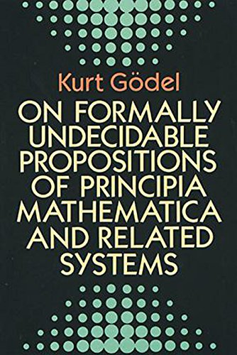

Mircea Baja @ ACCU Oxford - 26 Feb 2020

# Irregularity in Generic Programming

???

The original idea of this talk is that diversity in data structures and
algorithms results in generic solutions being quirky and not universal (the
irregularity conjecture).

To get there, we're going to have a bit of fun with simple data structures
(linked lists) and simple algorithms (linear find and partition), see what
(C++20) concepts are, to build towards the more philosophical part
on the design and usage of generic code.

---
class: large-points

# Objective

- What is irregularity?
- The irregularity continuum
- The irregularity conjecture
- What is regularity?
- Elements of Programming
- Concepts as thinking tool
- Concepts in C++ 20
- The naming quirks
- A list/vector is just a kind of list/vector

---
class: large-points

# The vector theorem

- Theorem: `std::vector` is just a kind of vector (paraphrasing Alex Stepanov)

--

- Lemma: `std::list` is just a kind of linked list

- However, if you can only remember one thing: you shall use a `std::vector` by
  default (i.e. a memory contiguous data/extent based structure, the linked
  lists are for rare special situations)

- Many choices for linked lists, not all independent (orthogonal)

---

# Single linked


--

# Double linked


---

# Linear


--

# Circular


---

# Header - minimalistic

- Pointer to head


- Pointer to tail


--

- or Not minimalistic

---
class: large-points

# Iterators - minimalistic

--

# List size

--
# Splicing

- Partial
- Total

--

# Operations available

- e.g. constant time `push_back()`

---

# Links to local parts

- No


- Yes


---

# Dummy node


- Meaning (end iterator, none/simplify empty list case)
- Location (heap, header)
- If on the heap: always present?
- Can dereference/does it have a value?

---
class: large-points

# More

- Permanent end iterator
- Forward/Bidirectional iterator
- Intrusive/non-intrusive
- Iterator from reference to value
- Node ownership
- Allocators
- Meaning of node pointers/fast reverse
- Thread safety

---

# Single linked basic


- No constant time `push_back()`
- `std::forward_list`

---

# Single linked circular


- Two choices on accessing tail from the iterator:
  - Directly: as above
  - Indirectly: through the header
- Note: comparing for end slightly different from comparing two iterators

---

# Single linked first-last


---
class: large-points

# Single linked summary

- The price to pay for constant time `push_back()` either: iterator not
  minimalistic OR header not minimalistic

---

# Double linked linear


---

# Double linked circular


---

# Double linked with allocated dummy node


- `std::list` in Visual C++ 2017

---

# Allocated dummy node


--

```cpp
static_assert(std::is_nothrow_default_constructible_v<std::list<int>>,
  "Default constructor may throw");

static_assert(std::is_nothrow_move_constructible_v<std::list<int>>,
  "Move constructor may throw");

// both assert in Visual Studio C++ 2017
```

---

# Double linked with dummy node in header


- `move` invalidates end
- `std::list` implementation option

---
class: large-points

# Double linked summary

- Does this remind you of Bubba from the Forest Gump film talking about shrimp?

---

# Implementing one

```cpp
template<typename T>
class dl_list {
  struct node;
  struct links {
    node * next_;
    node * prev_;
  };
  struct node : public links {
    T value_;
    //...
```

- A double linked list
- Circular
- With dummy node in the header
- Non-intrusive (nodes are provided by the list class)
- Nodes are allocated on the heap (no custom allocator)
- List owns the nodes
- No cached size

---
class: large-points

# Type naming quirks

- A lot of info on implementation details is required to provide a complete type description
- A pragmatic solution: reduced vocabulary
- `std::list` and `std::forward_list`
- `std::shared_ptr` and `std::unique_ptr`

---

# Incidental linear find

- Find and replace the first `5` with `42`

```cpp
int data[] = {2, 5, 7, 1, 22};

for(int i = 0; i < 6; ++i);
{
  if (data[i] == 5) {
    // found
    data[i] = 42;
    return;
  }
}
// not found
```

--
- This was a trick question, code above is wrong

---

# Iterators: generalized pointers

- "points to"/hardware view


- "points between"/Sean Parent view


---

# Linear find with pointers - toy

```cpp
int * find(int * f, int * l, int x) {
  while ((f != l) && (*f != x)) ++f;
  return f;
}
```

```cpp
int data[] = {2, 5, 7, 1, 22};

int * it = find(std::begin(data), std::end(data), 5);
if (it != std::end(data)) {
  // found
  *it = 42;
}
else {
  // not found
}
```

- Note we compare f with l twice: inside the `find` and outside

---

# Linear find template - toy

```cpp
template<typename It, typename T>
It find(It f, It l, T x) {
  while ((f != l) && (*f != x)) ++f;
  return f;
}
```

- Toy example, `x` is (sometimes) copied
- When does it work?
- It will work for `T` being `int`, `short`, `long`, `unsigned` etc.
- Pointer-like `first` and `last` to sequences of integer-like values
- Integer-like not in the addition/multiplication sense, but in the it holds a
  value that can be copied, compared for equality etc.

---
class: large-points

# Requirements syntactic

- We can compare for equality `f` and `l`
- We can dereference `f`
- The iterator type has an associated value type
- Dereferencing `f` is reference to the value type
- We can advance `f` (with `++`)
- These are easy to express

---
class: large-points

# Requirements semantic

- Once `f` equals `l`, it stays that way, we can compare again and get the same
  result
- And that's true even for a copy of `f`
- Equality: reflexive, symmetric and transitive
- We can reach `l` from `f`, `l` should not be dereferenced
- These are harder to express

---

# Linear find using concepts - toy

```cpp
template<typename It>
using ValueType = typename It::value_type;

template<typename It>
concept InputIterator = requires(It a, It b)
{
    {a == b} -> std::boolean;
    {a != b} -> std::boolean;
    typename ValueType<It>;
    {*a} -> std::common_reference_with<ValueType<It>>;
    ++a;
};

template<typename It>
  requires InputIterator<It>
It find(It f, It l, const ValueType<It> & x)
{
    while ((f != l) && (*f != x)) ++f;
    return f;
}
```

- Still toy example

---

# Linear find - industrial version

```cpp
template<InputIterator I, Sentinel<I> S, class T, class Proj = ranges::identity >
  requires IndirectRelation<ranges::equal_to<>, projected<I, Proj>, const T*>
I find(I f, S l, const T& x, Proj proj = Proj{})
{
  while ((f != l) && (ranges::invoke(proj, *f) != x)) ++f;
  return f;
}
```

- Sentinel supports iterators stopping on file end, zero terminated strings. In
  general the case where checking for the end is different from equality of two
  iterators.
- Projections support the case where only part of the value type is used
- Type `T` is not necessarily the value type of the iterator
- Overloaded to get a `range` e.g. the whole container

```cpp
std::cout << std::find(people, "Alice", &person::first_name)->last_name;
```
---

# Faster linear find

```cpp
template<typename I, typename T>
// requires I is an ForwardIterator
//   T is equality comparable,
//   T is the same as ValueType(I)
I find_by_setting_sentinel(I f, I l, const T & v) {
  // precondition: l can be dereferenced to store value as sentinel
  *l = v;
  while (*f != v) {
    ++f;
  }
  return f;
}
```

- Trick known in 1974/Knuth

---
class: large-points

# Safety vs. Efficiency note

- A lot of the constructs just shown seem unsafe
- But they are efficient
- There is long history of safety claims that hide under the carpet the
  inefficiency trade-offs
- There are cases where safety can be improved without runtime cost (e.g. RAII)

---

# Partition - example


---
class: large-points

# Partition - options

- Forward iterators - semistable
- Bidirectional iterators - faster
- Stable - more resources
- But can be implemented stable for list - the list iterators have something in
  common after all
- The predicate is only applied once


---
class: large-points

# Concepts

- General: tool of thinking about requirements on types (not on values),
  especially relations between types
- Specific: a particular way of implementing concepts in C++20 describing
  syntactic requirements

---
class: large-points

# Concept naming quirks

- Non-intuitive synthetic names e.g. iterator, value type, sentinel, projection
  etc.
- Not derived mechanically
- Based on observations on common behaviour
- They are invented, taste and choice matters
- Reduced vocabulary is a practical choice sometimes
- Another practical choice is over-constraining to start with

---
class: large-points

# Hyperbolic usage conjecture

- A small number of built-in types used a lot
- A large number of user defined types used once or twice


- Same applies to concepts

---
class: large-points

# Regular concept - for data

- Default constructible
- Copyable (and movable)
- Equality
- Destructible

```cpp
Some a;
a = b;
assert(a == b);
c = b;
assert(a == c);
```

- Fundamental behaviour, relied on for correctness reasoning
- Integer-like not in the addition/multiplication sense, but in the it holds a
  value that can be copied, compared for equality etc.
- e.g. standard containers

---
class: large-points

# Regular concept - for functions

- Arguments and return types are regular data types
- Replacing arguments with equal values results into equal return values
- Pure functions with no side effects, and no internal state like random number
  generators
- e.g. predicates for standard algorithms
- Different sounding definition compared with data regularity
- Same outcome: fundamental behaviour, relied on for correctness reasoning

---
class: large-points

# Irregularity continuum

- For almost every characteristic of a regular data concept, there are useful
  types that violate it

---
class: large-points

# Data irregularity examples

- Move: a bit weird - move an integer?
- Constructor throws - standard containers
- Default constructor throws - `std::list`
- Move constructor throws - `std::list`
- Destructor throws - scope exit idiom
- No default constructor - scope object
- No copy - move only resource types
- Equality - of what? e.g. equality of remote content
- Equality complexity - worst case quadratic for unordered containers
- Equality for input iterator - does not make sense
- Float Nan equality `==` not `!=`
- **But** have not seen a sane case where `==` is different from not `!=`

---
class: large-points

# Function irregularity examples

- A lot of code is about side effects, order of operations matter - fully
  irregular
- Pseudo-regular - algorithms where the function only gets applied once per
  value - e.g. partition example

---
class: large-points

# Irregularity conjecture

- Generic data structures and algorithms are diverse, quirky and are not universal

--
- Reduced vocabulary is a pragmatic option of handling complexity
- Gains (efficiency/different behaviour) are available in special cases
- Either by using a more refined vocabulary
- Or by using human knowledge not available to the machine

---
class: large-points

# Things we know - examples

- Side effects are fine: pseudopredicate
- Sequence is sorted/ordered/partitioned for relation used: binary search can be used
- Relation is transitive for values provided
- `push_back()` won't throw: `vector` was previously resized
- Permutations can avoid invalidating the moved from objects

--
- Machines cover more ground, but there is always a gap


---

# Books


<table>
<tr>
<td></td>
<td></td>
<td></td>
<td></td>
</tr>
</table>

---

# References


Alexander A. Stepanov and Paul McJones: Elements of Programming

Robert Endre Tarjan: Data Structures and Network Algorithms

# Links

https://bajamircea.github.io/coding/cpp/2018/08/01/linear-find.html

https://bajamircea.github.io/coding/cpp/2018/08/05/partition.html

https://bajamircea.github.io/coding/cpp/2018/06/28/linked-lists-examples.html

https://bajamircea.github.io/coding/cpp/2018/06/30/lists-implementing.html

https://bajamircea.github.io/presentations/2020-02-26-irregularity.html

---

# Thanks

Thanks go to Nigel Lester for organizing the ACCU meeting

---

# Questions?

